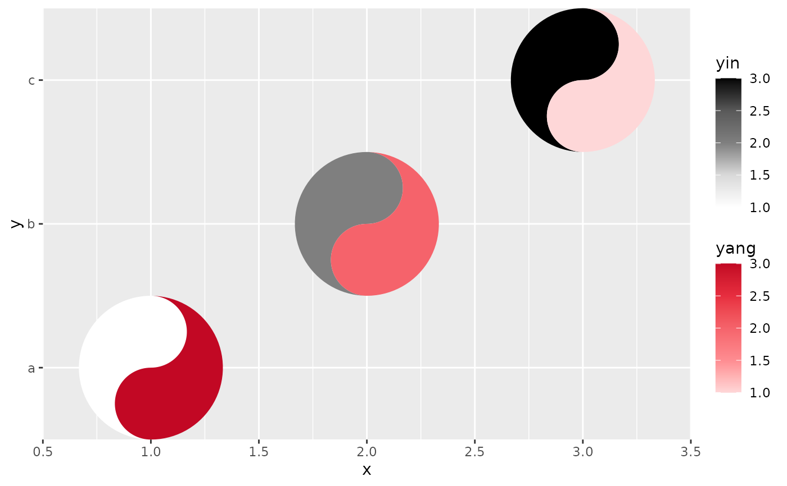

ggplot2 pads both continuous and discrete axes with a little expansion, which can make a taichi grid look like it is floating. `remove_padding()` trims that space. Called with no arguments it inspects the plot it is added to and figures out for itself whether each axis is continuous or discrete; pass `"c"` (continuous) or `"d"` (discrete) explicitly to override the detection, e.g. when the axis mapping is a computed expression the plot data cannot answer for.
Examples
library(ggplot2)
d <- data.frame(x = 1:3, y = c("a", "b", "c"), yin = 1:3, yang = 3:1)
# auto-detects x as continuous and y as discrete
ggplot(d, aes(x, y)) +
geom_taichi(yin = yin, yang = yang) +
remove_padding()

# explicit override, identical result here
ggplot(d, aes(x, y)) +
geom_taichi(yin = yin, yang = yang) +
remove_padding(x = "c", y = "d")